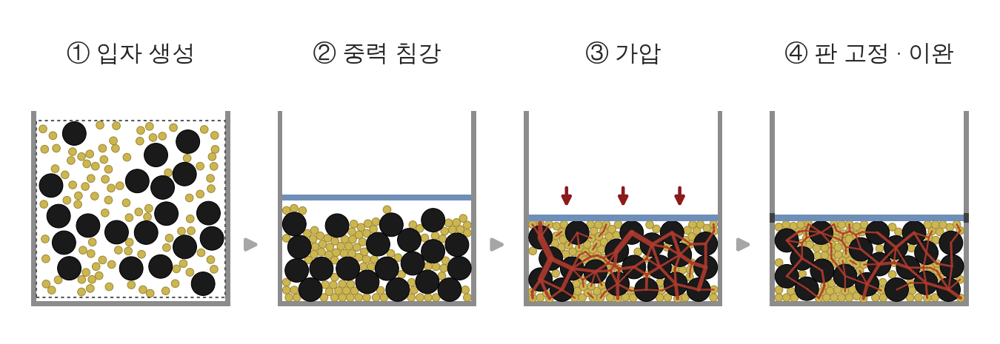
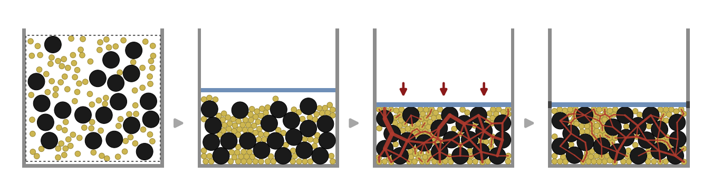
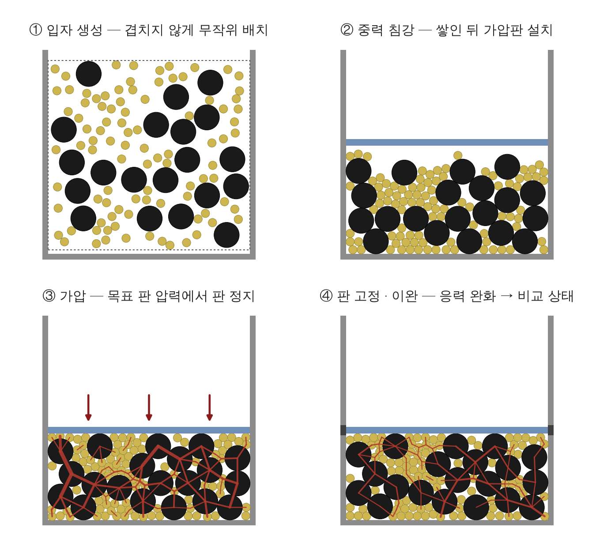
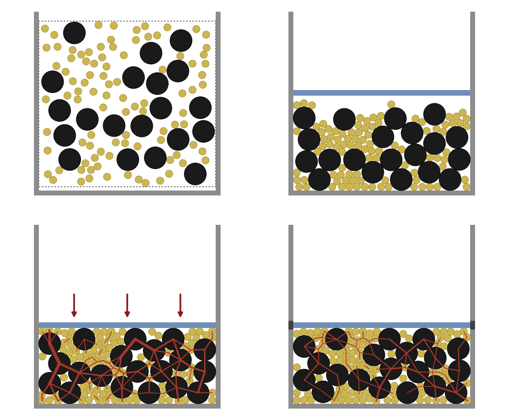
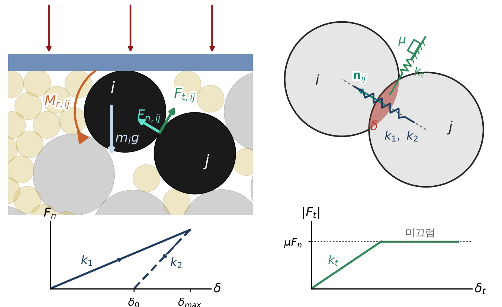
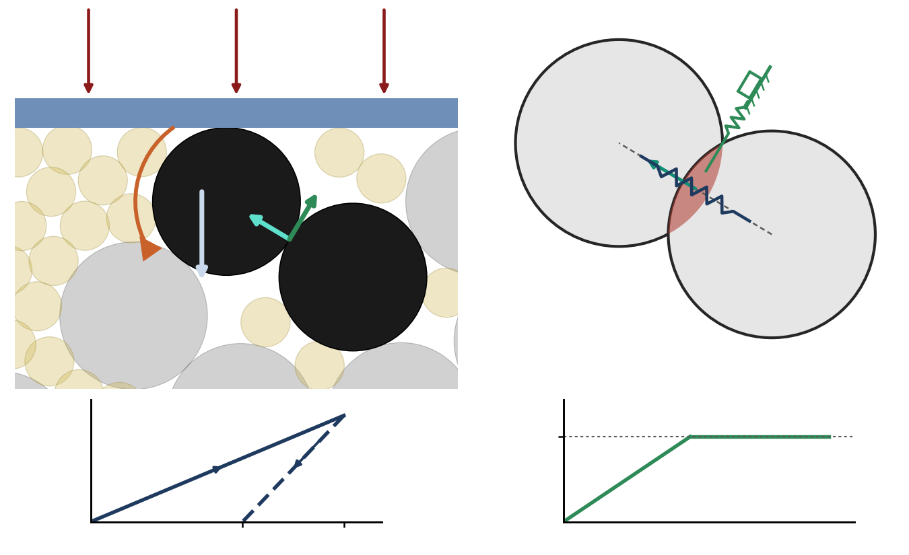

DEM 방법 그림 (2D)
50kg 4차년도 보고 0쪽 — DEM 해석 절차 · 접촉 모델 · 그림 여섯 · PNG · SVG 내려받기 (11-02)
2D 모식 계산 (그림용 · 실제 3D 침대 결과 아님)
힘 · 길이 · 시간 = 임의 단위.
씨앗 공개
그림은 씨앗 23 으로 만들었다. 네 씨앗 (11 · 13 · 17 · 23) 중 둘 (11 · 17) 은 판 정지 뒤 판 힘이 오른다. 그림 ④ 단계 (판 고정 · 응력 완화) 를 보이려고 내림이 큰 23 을 골랐다 — 이완 뒤 판 힘 방향은 씨앗에 따라 다르다 → 힘 사슬 굵기 변화는 그림 설명용이지 결과가 아니다.
| 씨앗 | 판 정지 순간 판 힘 | 이완 끝 판 힘 | 방향 |
|---|---|---|---|
| 11 | 1186.1 | 1278.0 | 오름 |
| 13 | 1228.5 | 940.1 | 내림 |
| 17 | 1193.2 | 1319.9 | 오름 |
| 23 | 1191.9 | 738.2 | 내림 |
값 = scan_seeds_20261101.txt (생성기 --scan 출력) · 힘 = 임의 단위 · 소수 한 자리.
PNG = 300 dpi · 투명 배경 · SVG = 글자 그대로 (글꼴 Carlito · WenQuanYi Zen Hei). 미리보기 바탕은 흰색이다 (PNG 가 투명 배경이라). 크기 = 그림 한 장의 가로 × 세로 (in).
해석 절차 — 1 × 4 띠
p0_process_labeled
4.50 × 1.55 in
해석 절차 네 단계 (① 입자 생성 → ② 중력 침강 → ③ 가압 → ④ 판 고정 · 이완) · 단계 이름 포함



p0_process_nolabel
4.50 × 1.22 in
같은 그림 · 단계 이름 없음 (PPT 글로 붙일 때)



해석 절차 — 2 × 2
p0_process_grid_labeled
4.50 × 4.10 in
같은 네 단계 2 × 2 배치 (같은 배율 · 단계 이름 + 짧은 설명 포함) — 2판의 0쪽 왼쪽 칸 권고 (지금 = 쓰지 않음 · 대안)



p0_process_grid_nolabel
4.50 × 3.70 in
2 × 2 · 글자 없음



접촉 모델
p0_contact_model_labeled
4.50 × 2.75 in
접촉 모델 — 위 왼쪽 = 가압 중 판 아래 활물질 i 와 이웃 j 의 접촉력 (F_n,ij · F_t,ij) · 중력 (m_i g) · 구름 저항 (M_r,ij) / 위 오른쪽 = 접촉 i–j 의 겹침 δ (과장) · 법선 스프링 (k₁ · k₂) · 접선 스프링 + 미끄럼 요소 (k_t · μ) / 아래 왼쪽 = 법선 이력 (누름 k₁ · 뗌 k₂ · 잔류 δ₀) / 아래 오른쪽 = 접선 힘 상한 μF_n



p0_contact_model_nolabel
4.50 × 2.75 in
같은 그림 · 기호 글자 없음



함께 받는 파일
| 파일 | 무엇 | 받기 |
|---|---|---|
README.md | 그림 설명 원본 (이 폴더의 README) | 받기 |
p0_figs_meta.json | 모식 계산 값 · 고른 접촉 쌍 · 파일 sha256 | 받기 |
scan_seeds_20261101.txt | 네 씨앗 판 힘 (판 정지 순간 → 이완 끝) = 생성기 --scan 출력 | 받기 |
toy2d_seed23.json | 모식 계산 상태 (네 단계 입자 위치 · 접촉 법선력 · 판 높이) | 받기 |
원본 = docs/50kg/report_y4/figs/p0_dem_method/ · 생성기 = docs/50kg/report_y4/figs/make_fig_p0_dem_method.py.
이 페이지의 파일 (webapp/static/dem_method_figs/files/) = 원본 바이트 그대로의 사본 — 그림을 다시 만들면
python3 scripts/sync_dem_method_figs_to_webapp.py 로 맞추고 --check 로 대조한다.